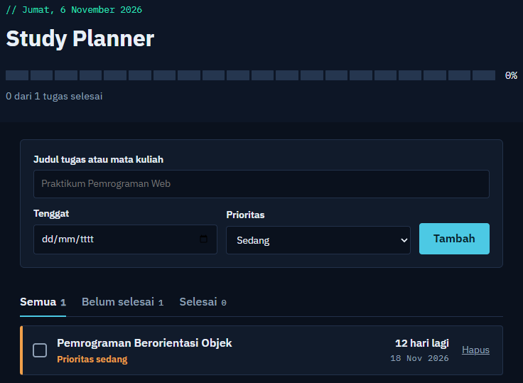

study-planner.app

Web Application
ITERA Interactive Study Planner
Aplikasi manajemen tugas dan jadwal belajar mahasiswa dengan indikator progres visual, penyaringan prioritas, dan integrasi LocalStorage.
HTML
CSS
JavaScript
LocalStorage API